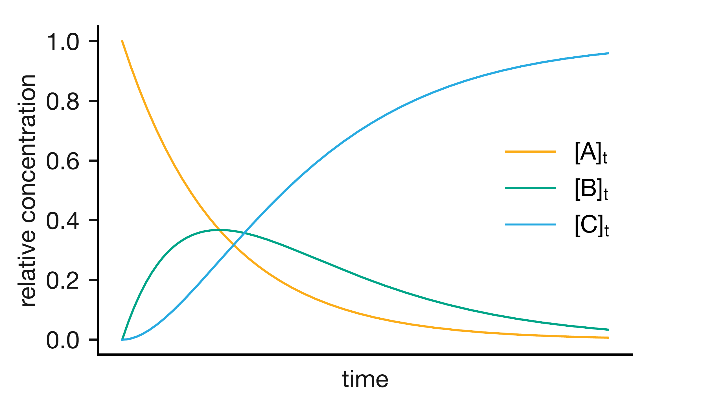
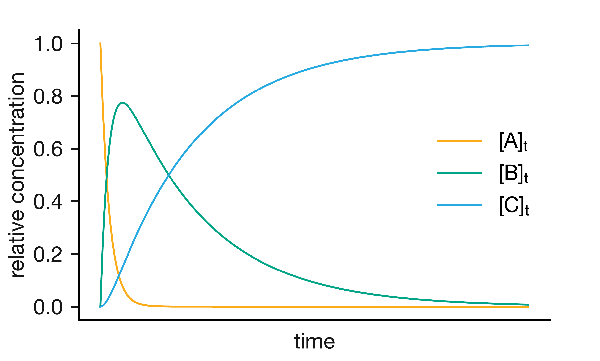
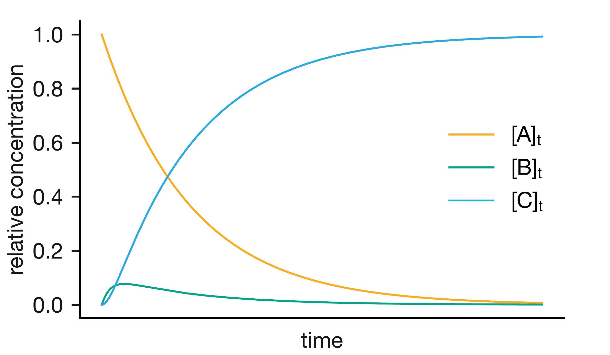
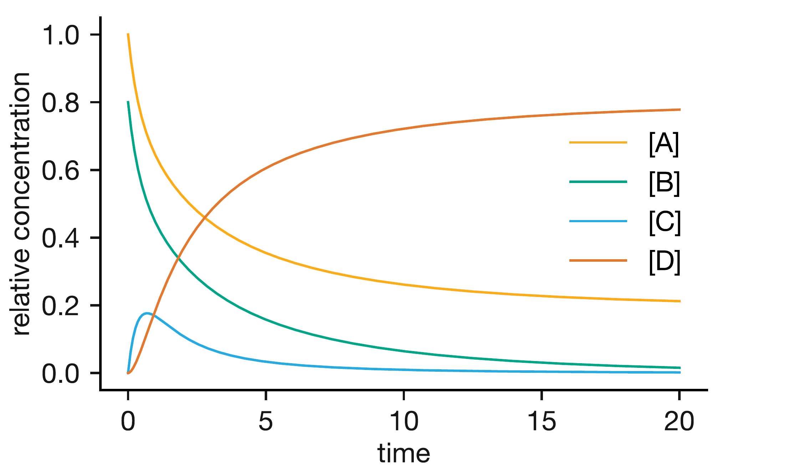
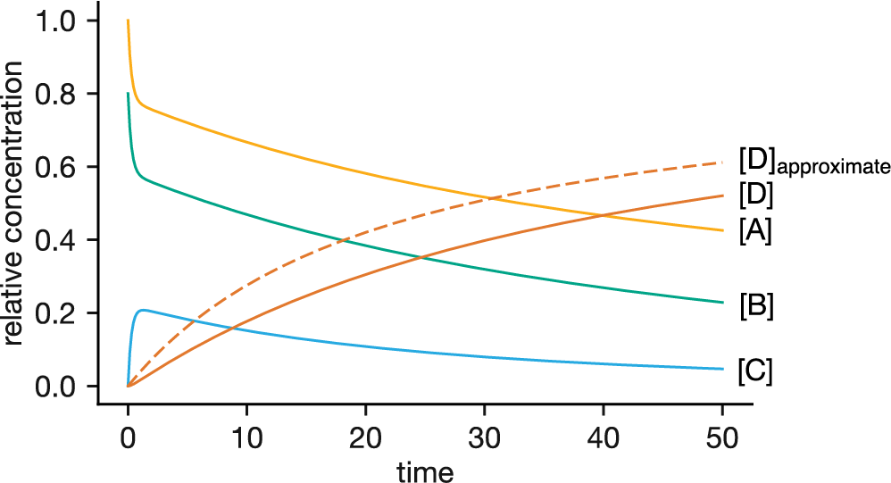

Lecture 4 Complex Reaction Mechanisms
So far, we have focused on reactions that can be described by a single rate law involving a single reactant. In Lecture 1, we saw that the reaction H2 + Br2 → 2HBr has a complex rate law that cannot be written as a simple power law, and we noted that a complex rate law always implies a multi-step mechanism. Most chemical reactions proceed through such multiple elementary steps, often involving intermediate species that are formed and then consumed during the reaction. How do we analyse the kinetics of these more complex mechanisms?
4.1 Consecutive Reactions
Consider a reaction in which A is converted to a final product C, but not directly — instead, it proceeds through an intermediate B:
\[\mathrm{A} \xrightarrow{k_1} \mathrm{B} \xrightarrow{k_2} \mathrm{C}\]
This is a consecutive reaction (or sequential reaction): the product of the first step becomes the reactant for the second. The overall mechanism consists of two elementary processes, each with its own rate constant.
To analyse the kinetics, we need to write a differential rate equation for each species. The systematic way to do this is in two stages. First, write down the rate of each elementary step. Then, assemble the rate equation for each species by adding together the contributions from every step it participates in, with a positive sign if the species is produced and a negative sign if it is consumed. With practice, we can often write down the rate equations directly, but writing out the step rates first is a useful scaffold when getting used to this procedure.
Both steps are unimolecular, so we can write down their rates immediately:
\[\mathrm{rate}_1 = k_1[\mathrm{A}] \qquad \mathrm{rate}_2 = k_2[\mathrm{B}]\]
Now we build the rate equation for each species. A is consumed in step 1 and does not appear in step 2, so:
\[\frac{\mathrm{d}[\mathrm{A}]}{\mathrm{d}t} = -\mathrm{rate}_1 = -k_1[\mathrm{A}]\]
C is produced in step 2 and does not appear in step 1, so:
\[\frac{\mathrm{d}[\mathrm{C}]}{\mathrm{d}t} = +\mathrm{rate}_2 = +k_2[\mathrm{B}]\]
The intermediate B is more interesting: it is produced by step 1 and consumed by step 2, so its rate equation has contributions from both:
\[\frac{\mathrm{d}[\mathrm{B}]}{\mathrm{d}t} = +\mathrm{rate}_1 - \mathrm{rate}_2 = +k_1[\mathrm{A}] - k_2[\mathrm{B}]\]
There is a useful pattern here: each rate equation has as many terms as the number of elementary steps that species participates in. A and C each appear in one step, so their equations have a single term. B appears in two steps, so its equation has two terms. This principle applies to any mechanism, however complex, and is the starting point for every kinetic analysis that follows.
The equation for A is just first-order decay; we already know how to solve this. The equation for B is more involved: it depends on both \([\mathrm{A}]\) and \([\mathrm{B}]\). But since we can solve the equation for A independently, we can substitute the result into the equation for B.
4.1.1 Solving the Rate Equations
We start with only A present initially (\([\mathrm{B}]_0 = 0\), \([\mathrm{C}]_0 = 0\)). The equation for A is a simple first-order decay, giving:
\[[\mathrm{A}]_t = [\mathrm{A}]_0\,\mathrm{e}^{-k_1t}\]
Substituting the known \([\mathrm{A}]_t = [\mathrm{A}]_0\,\mathrm{e}^{-k_1t}\) into the equation for B gives:
\[\frac{\mathrm{d}[\mathrm{B}]}{\mathrm{d}t} + k_2[\mathrm{B}] = k_1[\mathrm{A}]_0\,\mathrm{e}^{-k_1t}\]
This is a linear first-order differential equation that can be solved using an integrating factor. The integration itself is not examinable, but the result is:
\[\begin{equation} [\mathrm{B}]_t = \frac{k_1}{k_2 - k_1}[\mathrm{A}]_0\left(\mathrm{e}^{-k_1t} - \mathrm{e}^{-k_2t}\right) \tag{4.1} \end{equation}\]
The concentration of B is a difference of two exponentials, one representing its formation from A and the other its consumption to form C. This means \([\mathrm{B}]\) starts at zero, rises to a maximum, and then falls back to zero as B is consumed — the characteristic rise-and-fall profile of a reactive intermediate.
For C, we use mass balance: since every molecule of A must end up as either A, B, or C, we have \([\mathrm{C}]_t = [\mathrm{A}]_0 - [\mathrm{A}]_t - [\mathrm{B}]_t\), which gives:
\[\begin{equation} [\mathrm{C}]_t = [\mathrm{A}]_0\left(1 + \frac{k_1\mathrm{e}^{-k_2t} - k_2\mathrm{e}^{-k_1t}}{k_2 - k_1}\right) \tag{4.2} \end{equation}\]
Notice that as \(t \to \infty\), both exponentials vanish and \([\mathrm{C}]_t \to [\mathrm{A}]_0\): all the reactant is eventually converted to product. Also notice that \([\mathrm{C}]\) does not begin rising immediately: product can only form once the intermediate B is present, so there is a brief induction period at early times while B builds up from zero.
For comparison, for a simple first-order reaction A \(\to\) C with no intermediate, mass balance gives \([\mathrm{C}]_t = [\mathrm{A}]_0 - [\mathrm{A}]_t = [\mathrm{A}]_0(1 - \mathrm{e}^{-kt})\). The full expression for the consecutive case (Eqn. (4.2)) is more complex, but it simplifies when one step is much faster than the other.

Figure 4.1: Concentration profiles for the consecutive reaction A → B → C. The reactant A decays exponentially. The intermediate B rises to a maximum then falls. The product C increases monotonically towards \([\mathrm{A}]_0\).
Figure 4.1 shows the concentration profiles when \(k_1\) and \(k_2\) are comparable. At the start of the reaction we have only A, and its concentration drops as it is converted into the intermediate B. The concentration of B grows, reaches a maximum, and then falls again as B is consumed to form C. The product C rises slowly at first and then accelerates, eventually approaching \([\mathrm{A}]_0\).
4.1.2 The Rate-Determining Step
The behaviour of a consecutive reaction depends critically on the relative magnitudes of \(k_1\) and \(k_2\).
When \(k_1 \gg k_2\) (fast first step, slow second step):
A is consumed rapidly and B builds up to a high concentration before slowly converting to C. The overall rate of product formation is controlled by the slow second step — the first step “waits” for the second to catch up.
To derive the limiting form, consider Eqn. (4.2). When \(k_1 \gg k_2\), the exponential \(\mathrm{e}^{-k_1t}\) decays much faster than \(\mathrm{e}^{-k_2t}\), so at all but the very earliest times we can set \(\mathrm{e}^{-k_1t} \approx 0\). In the denominator, \(k_2 - k_1 \approx -k_1\). Substituting:
\[[\mathrm{C}]_t \approx [\mathrm{A}]_0\left(1 + \frac{k_1\mathrm{e}^{-k_2t}}{-k_1}\right) = [\mathrm{A}]_0\left(1 - \mathrm{e}^{-k_2t}\right)\]
The rate depends on \(k_2\) but not on \(k_1\): making the first step even faster does not speed up the overall reaction (Figure 4.2).

Figure 4.2: Concentration profiles when \(k_1 \gg k_2\). The intermediate B builds up rapidly and then decays slowly. The second step is rate-determining: the overall rate depends on \(k_2\) but not on \(k_1\).
When \(k_1 \ll k_2\) (slow first step, fast second step):
A is consumed slowly, and B is converted to C almost as soon as it forms, so B never accumulates to a significant concentration. The overall rate is controlled by the slow first step.
Now \(\mathrm{e}^{-k_2t}\) decays much faster than \(\mathrm{e}^{-k_1t}\), so we set \(\mathrm{e}^{-k_2t} \approx 0\). In the denominator, \(k_2 - k_1 \approx k_2\). Substituting into Eqn. (4.2):
\[[\mathrm{C}]_t \approx [\mathrm{A}]_0\left(1 + \frac{- k_2\mathrm{e}^{-k_1t}}{k_2}\right) = [\mathrm{A}]_0\left(1 - \mathrm{e}^{-k_1t}\right)\]
Now the rate depends on \(k_1\) but not on \(k_2\): making the second step even faster does not help (Figure 4.3).

Figure 4.3: Concentration profiles when \(k_1 \ll k_2\). The intermediate B remains at low concentration throughout because it is consumed almost as fast as it forms. The first step is rate-determining.
In both cases, the overall rate is governed by the slower step — the rate-determining step (or rate-limiting step): the slowest step in a multi-step mechanism, which acts as a bottleneck for the overall rate. We can identify it from the concentration profiles: it is the step whose rate constant appears in the simplified expression for \([\mathrm{C}]_t\).
Notice that both limiting expressions have the same functional form, \([\mathrm{C}]_t = [\mathrm{A}]_0(1 - \mathrm{e}^{-k_\mathrm{slow}t})\), which is identical to the product concentration for a simple first-order reaction. In each case, the consecutive mechanism reduces to effective first-order kinetics governed by the rate-determining step. This pattern of a reactive intermediate formed in one step and consumed in the next is ubiquitous in chemistry: it is the central idea behind the Lindemann mechanism for unimolecular reactions, where an energised molecule A* plays the role of our intermediate B.
You should be able to: Write differential rate equations for each species in a consecutive reaction A → B → C, describe qualitatively how the concentrations of reactant, intermediate, and product evolve with time, identify the rate-determining step from the relative magnitudes of \(k_1\) and \(k_2\), and given the full integrated rate law for \([\mathrm{C}]_t\), derive the simplified expressions for the limiting cases \(k_1 \gg k_2\) and \(k_1 \ll k_2\).
4.2 Equilibrium Reactions
So far, our consecutive reaction A \(\to\) B \(\to\) C went to completion: all the reactant was eventually converted to product. In reality, no reaction goes fully to completion: every reaction eventually reaches equilibrium. Consider the simplest case:
\[\mathrm{A} \underset{k_{-1}}{\stackrel{k_1}{\rightleftharpoons}} \mathrm{B}\]
The rate equations now include both the forward and reverse processes:
\[\frac{\mathrm{d}[\mathrm{A}]}{\mathrm{d}t} = -k_1[\mathrm{A}] + k_{-1}[\mathrm{B}]\]
\[\frac{\mathrm{d}[\mathrm{B}]}{\mathrm{d}t} = +k_1[\mathrm{A}] - k_{-1}[\mathrm{B}]\]
When we say the system “reaches equilibrium”, we do not mean the reaction has stopped. A and B are still interconverting: A is still forming B, and B is still forming A. What happens is that the forward and reverse rates become exactly equal, so the net change in \([\mathrm{A}]\) and \([\mathrm{B}]\) is zero. The reaction continues at the molecular level, but we observe no change in concentrations. This is a dynamic equilibrium, and the distinction matters: it is not that nothing is happening, but that two opposing processes are perfectly balanced. The rate at which a system approaches equilibrium depends on both \(k_1\) and \(k_{-1}\); this is the basis of relaxation methods such as the temperature jump experiment (Appendix C).
Mathematically, setting the net rates to zero (\(\mathrm{d}[\mathrm{A}]/\mathrm{d}t = \mathrm{d}[\mathrm{B}]/\mathrm{d}t = 0\)) gives:
\[k_1[\mathrm{A}]_\mathrm{eq} = k_{-1}[\mathrm{B}]_\mathrm{eq}\]
Rearranging:
\[\begin{equation} \frac{[\mathrm{B}]_\mathrm{eq}}{[\mathrm{A}]_\mathrm{eq}} = \frac{k_1}{k_{-1}} = K_\mathrm{eq} \tag{4.3} \end{equation}\]
The equilibrium constant \(K_\mathrm{eq}\) (the ratio of concentrations at equilibrium) equals the ratio of the forward and reverse rate constants. This connects kinetics (how fast reactions go) with thermodynamics (where the equilibrium lies). A large \(K_\mathrm{eq}\) means the forward rate constant is much larger than the reverse: equilibrium lies to the right, favouring products. A small \(K_\mathrm{eq}\) means the reverse reaction dominates: equilibrium lies to the left, favouring reactants.
This relationship is general: for any elementary equilibrium, the equilibrium constant equals the ratio of the forward and reverse rate constants. In thermodynamics, the equilibrium constant appears through the relationship \(\Delta G^\circ = -RT\ln K_\mathrm{eq}\). What we have shown here is that this thermodynamic quantity is determined by the ratio of the forward and reverse rate constants.
The same idea underpins the Langmuir adsorption isotherm, where molecules adsorb onto and desorb from a surface, and the equilibrium surface coverage is determined by the ratio \(k_\mathrm{ads}/k_\mathrm{des}\).
You should be able to: Write rate equations for a reversible reaction, derive the relationship \(K_\mathrm{eq} = k_1/k_{-1}\) by setting the net rate to zero, and explain the connection between kinetics and thermodynamics.
4.3 Pre-Equilibrium Mechanisms
What happens when a consecutive reaction has a reversible first step? Consider a mechanism in which A and B form an intermediate C through a reversible step, and C then converts irreversibly to products:
\[\mathrm{A} + \mathrm{B} \underset{k_{-1}}{\stackrel{k_1}{\rightleftharpoons}} \mathrm{C} \xrightarrow{k_2} \mathrm{D}\]
As before, we start by writing down the rate of each elementary step. The mechanism has three elementary processes: the bimolecular forward step, its unimolecular reverse, and the unimolecular second step:
\[\mathrm{rate}_1 = k_1[\mathrm{A}][\mathrm{B}] \qquad \mathrm{rate}_{-1} = k_{-1}[\mathrm{C}] \qquad \mathrm{rate}_2 = k_2[\mathrm{C}]\]
Now we assemble the rate equation for each species. A and B are both consumed by the forward first step and produced by its reverse, and neither appears in the second step. This gives identical rate equations for A and B:
\[\frac{\mathrm{d}[\mathrm{A}]}{\mathrm{d}t} = \frac{\mathrm{d}[\mathrm{B}]}{\mathrm{d}t} = -\mathrm{rate}_1 + \mathrm{rate}_{-1} = -k_1[\mathrm{A}][\mathrm{B}] + k_{-1}[\mathrm{C}]\]
The intermediate C participates in all three elementary processes: it is formed by the forward first step and consumed by both the reverse first step and the second step, giving three terms:
\[\frac{\mathrm{d}[\mathrm{C}]}{\mathrm{d}t} = +\mathrm{rate}_1 - \mathrm{rate}_{-1} - \mathrm{rate}_2 = k_1[\mathrm{A}][\mathrm{B}] - k_{-1}[\mathrm{C}] - k_2[\mathrm{C}]\]
D is produced only by the second step:
\[\frac{\mathrm{d}[\mathrm{D}]}{\mathrm{d}t} = +\mathrm{rate}_2 = k_2[\mathrm{C}]\]
Unlike the consecutive case, these equations cannot be solved analytically. The difference is the bimolecular forward step, which introduces the term \(k_1[\mathrm{A}][\mathrm{B}]\): a product of two unknown concentrations. In the consecutive reaction, every rate term involved only a single concentration (\(k_1[\mathrm{A}]\) or \(k_2[\mathrm{B}]\)), giving linear differential equations that can always be solved. The product \([\mathrm{A}][\mathrm{B}]\) makes the equations nonlinear, and nonlinear differential equations generally have no analytical solution. We can solve them numerically (on a computer), and the resulting concentration profiles are shown in Figure 4.4.
A powerful simplification is possible, however, when \(k_{-1} \gg k_2\): the reverse reaction of the first step is much faster than the forward reaction of the second step. Physically, this means A and B come together to form C, but C breaks apart again much faster than it converts to D. The first step reaches equilibrium long before a significant amount of D has been formed, and the intermediate C is in equilibrium with A and B even as it is slowly drained away by the second step. This is a pre-equilibrium.

Figure 4.4: Concentration profiles for the pre-equilibrium mechanism A + B ⇌ C → D. The intermediate C rapidly reaches a quasi-equilibrium concentration, then slowly depletes as product D forms.
Since the first step is effectively at equilibrium, we can write:1
\[\frac{[\mathrm{C}]}{[\mathrm{A}][\mathrm{B}]} = \frac{k_1}{k_{-1}} = K\]
which gives:
\[[\mathrm{C}] = K[\mathrm{A}][\mathrm{B}]\]
The overall rate of product formation is then:
\[\begin{equation} \nu = \frac{\mathrm{d}[\mathrm{D}]}{\mathrm{d}t} = k_2[\mathrm{C}] = k_2K[\mathrm{A}][\mathrm{B}] = \frac{k_1 k_2}{k_{-1}}[\mathrm{A}][\mathrm{B}] = k_\mathrm{obs}[\mathrm{A}][\mathrm{B}] \tag{4.4} \end{equation}\]
where \(k_\mathrm{obs} = k_1k_2/k_{-1}\). The result is a second-order rate law, even though the mechanism involves two steps (three elementary processes). If we measured this reaction experimentally, we would observe second-order kinetics (first order in A, first order in B), and the single rate constant we would extract from our data would be this composite \(k_\mathrm{obs}\). Measuring \(k_\mathrm{obs}\) alone does not tell us \(k_1\), \(k_{-1}\), and \(k_2\) separately.
How well does this approximation predict the concentration of product? Figure 4.5 compares the exact numerical solution for [D] (solid line) with the prediction from the pre-equilibrium rate law (dashed line). The approximate prediction captures the correct shape but systematically overestimates [D]. The reason is that the pre-equilibrium is not established instantaneously: at \(t = 0\), \([\mathrm{C}] = 0\), but the approximation assumes \([\mathrm{C}] = K[\mathrm{A}][\mathrm{B}]\) from the outset. During the initial period while [C] builds up to its quasi-equilibrium value, the true rate of product formation is lower than the pre-equilibrium prediction, and this early overshoot is carried forward to all later times.

Figure 4.5: Exact concentration profiles for the pre-equilibrium mechanism A + B ⇌ C → D (solid lines), with the prediction for [D] from the pre-equilibrium rate law shown as a dashed line. The approximate [D] overestimates the exact result because the approximation assumes the equilibrium is established from \(t = 0\), whereas in reality [C] starts at zero and takes time to build up.
The pre-equilibrium approximation applies whenever the first step equilibrates much faster than the second step proceeds, that is, when \(k_{-1} \gg k_2\). This same pattern governs enzyme catalysis: in the Michaelis–Menten mechanism, an enzyme and substrate rapidly form a complex (E + S ⇌ ES) that then slowly converts to products, and the pre-equilibrium approach gives the characteristic saturation kinetics observed experimentally.
If the pre-equilibrium condition is not met, we need a different approach. We can always write down the rate equations for any proposed mechanism; that is the straightforward part. Solving them is often the challenge, and approximations like the pre-equilibrium are what make that possible.
You should be able to: Identify when a pre-equilibrium approximation is appropriate, apply it to derive an overall rate law, and explain why the observed rate constant \(k_\mathrm{obs} = k_1k_2/k_{-1}\) depends on the rate constants of all three elementary steps.
4.4 Key Concepts
- Consecutive reactions (A → B → C) involve intermediate species whose concentration rises then falls. Writing rate equations for each species requires tracking which steps produce and consume each species.
- The rate-determining step is the slowest step in a multi-step mechanism. It acts as a bottleneck: the overall rate depends on the rate constant of this step, not the faster steps.
- Equilibrium is a dynamic state: forward and reverse reactions still occur, but at equal rates so the net change in concentration is zero. Setting the net rate to zero gives \(K_\mathrm{eq} = k_1/k_{-1}\), connecting kinetics (rate constants) to thermodynamics (the equilibrium constant).
- A pre-equilibrium mechanism arises when a fast reversible step establishes equilibrium before a slower step forms products. The approximation requires \(k_{-1} \gg k_2\).
- The pre-equilibrium approximation gives a simple overall rate law with an observed rate constant \(k_\mathrm{obs} = k_1k_2/k_{-1}\) that combines the rate constants of all three elementary steps.
- For any proposed mechanism, writing down the rate equations is always straightforward. The challenge lies in solving them, and approximations like the pre-equilibrium are what make that possible.
Strictly, the equilibrium constant \(K\) is dimensionless and defined relative to a standard concentration \(c^\circ = 1\,\mathrm{mol\,dm}^{-3}\), so \(K = [\mathrm{C}]c^\circ/([\mathrm{A}][\mathrm{B}])\). For simplicity, we absorb \(c^\circ\) into \(K\) here, which is equivalent to working with concentrations expressed in \(\mathrm{mol\,dm}^{-3}\).↩︎